Our Vessel Range
We build robust steel-hulled vessels designed to deliver reliable performance, certified by leading classification societies.
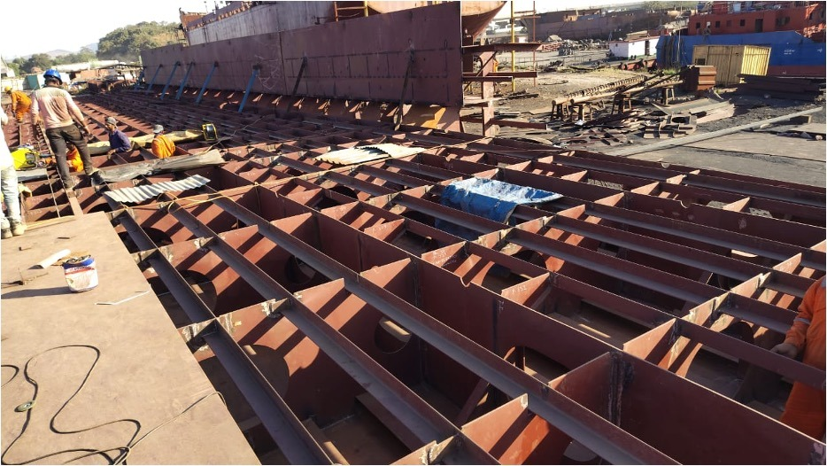
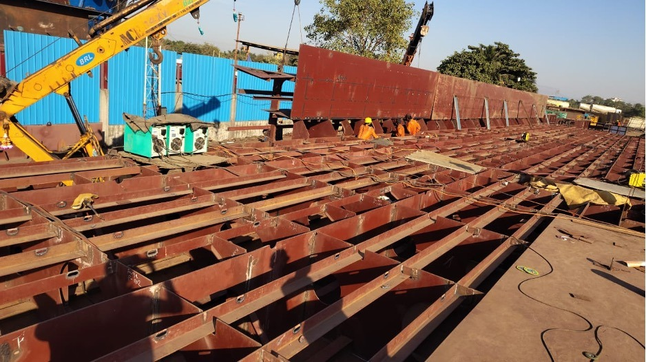
2500 T 86 M long MS Class IX Oil Tanker
An active new-build construction project of an 86-meter long oil tanker. Fabricating to MS Class IX requirements, featuring transverse framing, bulkheads installation, and class-certified weld outlays.
| Parameter | Vessel Specification |
|---|---|
| Vessel Type / Class | MS Class IX Oil Tanker |
| Length Overall (LOA) | 86.0 meters |
| Deadweight (DWT) | 2500 Tons |
| Classification | IRS Class Approved |
| Construction Stage | Hull & Deck Framing under fabrication |
| Materials Used | Grade A Marine Steel Plates & Framing Sections |
| Welding Standard | Class Certified Weld Procedures (NDT Checked) |
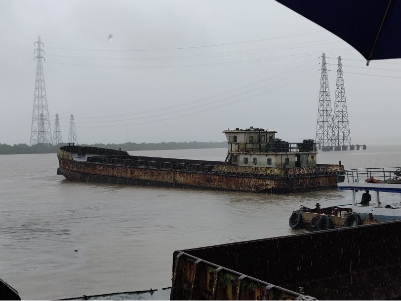
Cargo Barge Conversion to Sulphuric Acid Tanker
A major engineering retrofit converting a standard dry cargo barge into a highly specialized sulphuric acid chemical tanker. Carried out under strict RINA Class (IACS) rules, involving advanced steel renewals and chemical-resistant installations.
| Parameter | Project Specification |
|---|---|
| Conversion Type | Dry Cargo Barge to Sulphuric Acid Chemical Tanker |
| Classification Society | RINA Class (IACS Member Rules) |
| Hull Modifications | Acid-resistant bulkheads & double bottom reinforcements |
| Piping Systems | Heavy-gauge specialized chemical pump & piping loops |
| Services Delivered | Steel plate renewals, grit blasting, marine-grade epoxy coatings |
| Location | West Coast Yard |
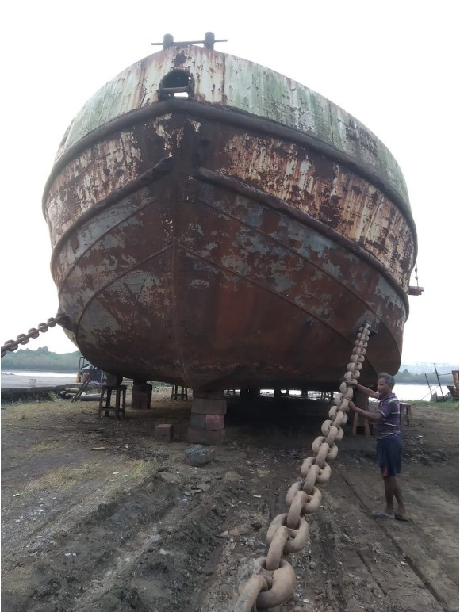
The M V Al Arfat 48 M Cargo Barge
Successful docking and positioning of the 48-meter cargo barge M V Al Arfat on the slipway at Maldar Shipyard, Belapur. Lothal Marine team performed full hull cleaning, thickness gauging, and class surveys to prepare the restoration plan.
| Parameter | Project Specification |
|---|---|
| Vessel Name | M V Al Arfat |
| Vessel Type | Cargo Barge |
| Length Overall (LOA) | 48.0 meters |
| Operational Yard | Maldar Shipyard (Reti Bunder, Belapur) |
| Status | Completed |
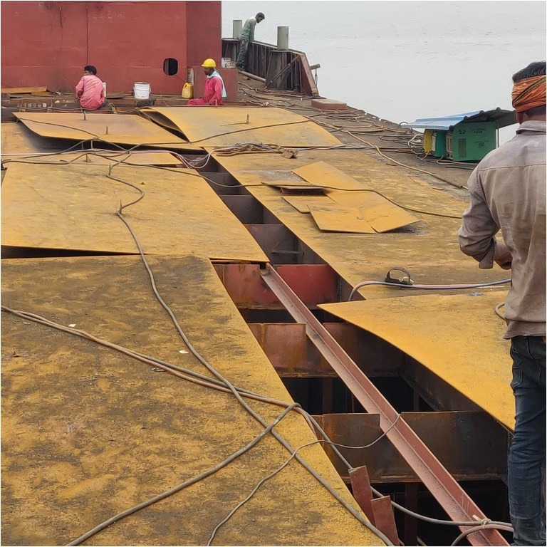
Tank Fabrication & 60 MT Steel Renewal
Execution of major structural steel renewal on the hull bottom, side shell, and deck plates. The scope included 60 metric tons of marine grade steel renewal and extensive internal tank structural fabrication.
| Parameter | Project Specification |
|---|---|
| Vessel Type | Cargo Barge |
| Steel Quantity | 60 Metric Tons (MT) renewed |
| Work Scope | Internal tank fabrication, hull plating & deck steel renewal |
| Welding Quality | Class welder weld-outs (tested via NDT/MPI) |
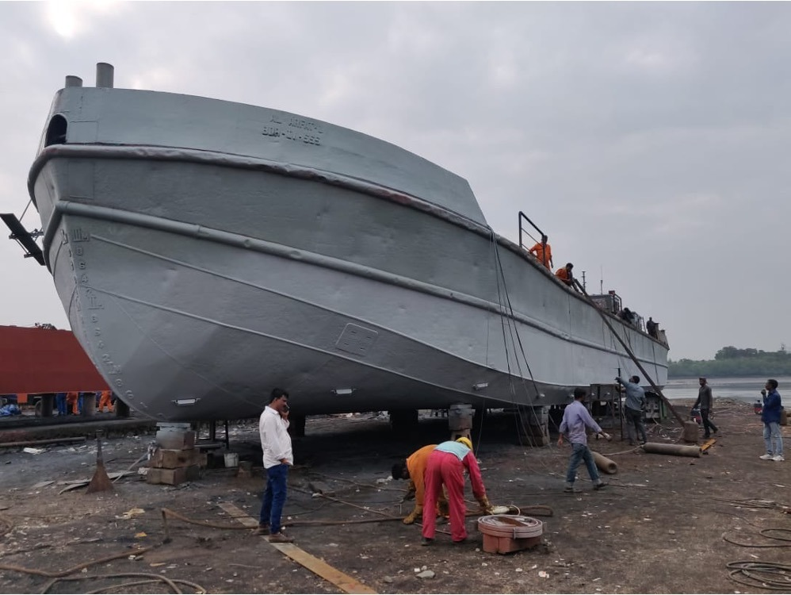
Grit Blasting, Primer & Paint
Full hull surface treatment. Carried out comprehensive grit blasting to SA 2.5 standards followed by high-performance epoxy primer application and several topcoats of marine-grade paint.
| Parameter | Project Specification |
|---|---|
| Vessel Type | Cargo Barge |
| Surface Preparation | Full hull grit blasting to SA 2.5 standard |
| Coating System | Anti-corrosive primer + several marine epoxy topcoats |
| Operational Yard | Maldar Shipyard (Reti Bunder, Belapur) |
| Status | Completed |
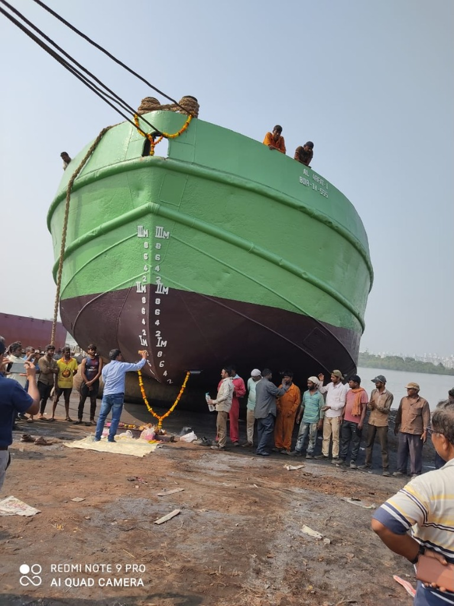
Launching on Balloons
Final float-out operation. The vessel was safely launched from the dry land slipway into the water using heavy-duty inflatable marine airbags (balloons).
| Parameter | Project Specification |
|---|---|
| Vessel Type | Cargo Barge |
| Launching Method | Heavy-duty marine airbags (balloons) |
| Operational Yard | Maldar Shipyard (Reti Bunder, Belapur) |
| Status | Completed & Delivered |
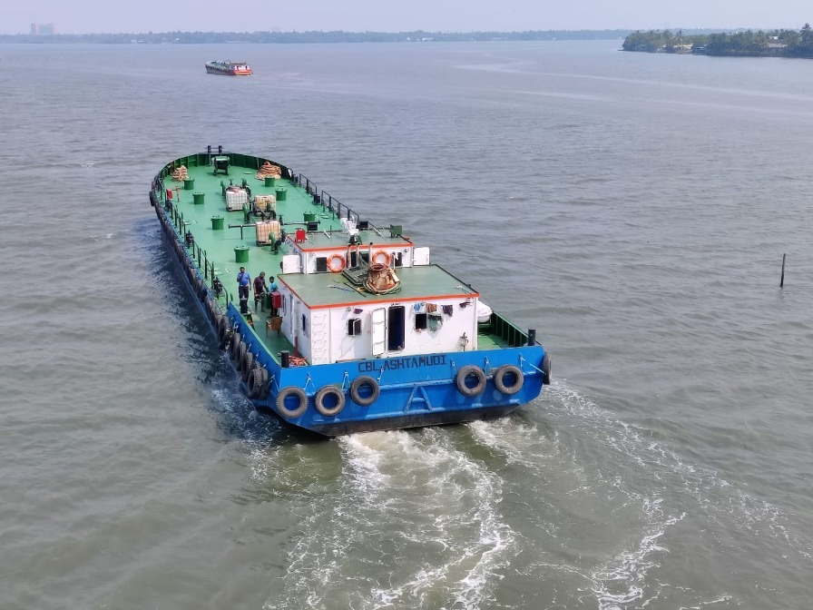
Successful Basin Trials of Converted Tanker
Execution of final basin trials and system integration tests on the newly converted chemical tanker CBL Ashtamudi. Validated propulsion performance, maneuvering, cargo pumping loops, and emergency systems to RINA Class requirements.
| Parameter | Project Specification |
|---|---|
| Vessel Name | CBL Ashtamudi |
| Vessel Type | Chemical Tanker (Converted) |
| Trial Type | Basin Trials & Propulsion Integration Testing |
| Classification | RINA Class Approved |
| Status | Completed Successfully |
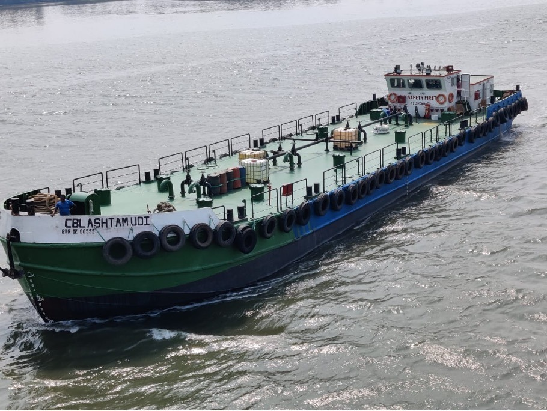
M V CBL Ashtamudi — In Service for FACT
Completed delivery of the converted chemical tanker M V CBL Ashtamudi. The vessel is class certified by RINA (IACS member) specifically for carrying sulfuric acid cargo and has successfully entered active commercial service for Fertilisers and Chemicals Travancore (FACT).
| Parameter | Project Specification |
|---|---|
| Vessel Name | M V CBL Ashtamudi |
| Charterer / Operator | Fertilisers and Chemicals Travancore (FACT) |
| Cargo Certified | Sulfuric Acid (H2SO4) |
| Classification Society | RINA Class Certified (IACS member rules) |
| Operational Status | In Active Service / Operations |
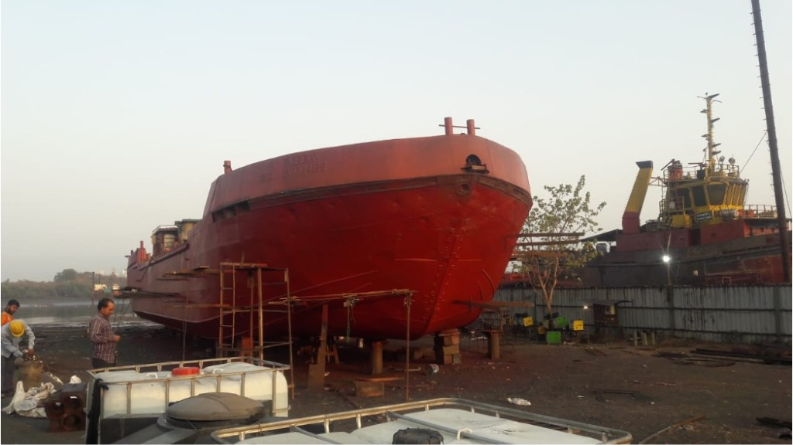
Conversion of M V Zubeda
Major engineering retrofit to convert the cargo barge M V Zubeda into a specialized phosphoric acid chemical carrier. The project involves extensive cargo hold redesign, double bottom reinforcement, acid-resistant piping loops, and rubber lining preparations to meet class requirements.
| Parameter | Project Specification |
|---|---|
| Vessel Name / Original Type | M V Zubeda (Cargo Barge) |
| Conversion Target | Phosphoric Acid Chemical Carrier |
| Classification | To be Class Certified (IACS standards) |
| Operational Yard | Maldar Shipyard (Reti Bunder, Belapur) |
| Current Status | Under Conversion (Hull reinforcement & structural modifications) |
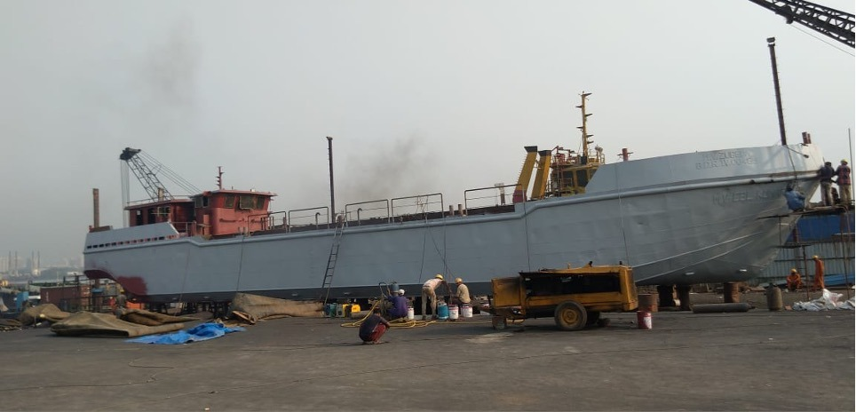
Copper Slag Grit Blasting & Painting
Complete hull surface treatment on the vessel M V Zubeda, incorporating high-pressure copper slag grit blasting to achieve an SA 2.5 near-white metal finish, followed by the application of multi-layer anti-corrosive marine paint systems.
| Parameter | Project Specification |
|---|---|
| Vessel Name | M V Zubeda |
| Surface Preparation | Copper slag grit blasting to SA 2.5 standard |
| Coating System | Anti-corrosive primer + marine epoxy topcoats |
| Operational Yard | Maldar Shipyard (Reti Bunder, Belapur) |
| Status | Completed |
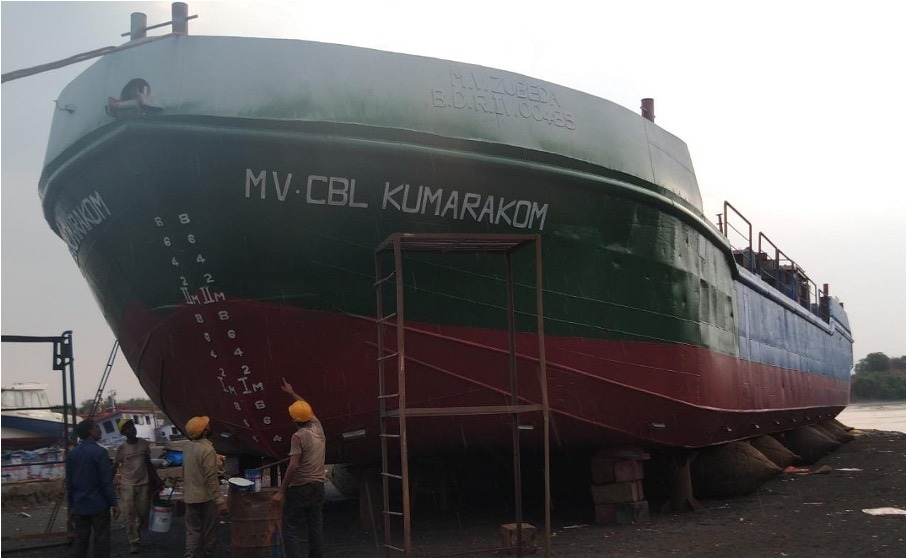
Launching of M V CBL Kumarakom
Successful slipway launching of the converted RINA class phosphoric acid chemical carrier M V CBL Kumarakom (formerly M V Zubeda) using heavy-duty inflatable marine airbags.
| Parameter | Project Specification |
|---|---|
| Vessel Name | M V CBL Kumarakom (formerly M V Zubeda) |
| Vessel Type | Phosphoric Acid Chemical Carrier |
| Classification | RINA Class Certified |
| Launching Method | Inflatable marine airbags (balloons) |
| Operational Yard | Maldar Shipyard (Reti Bunder, Belapur) |
| Status | Successfully Launched |
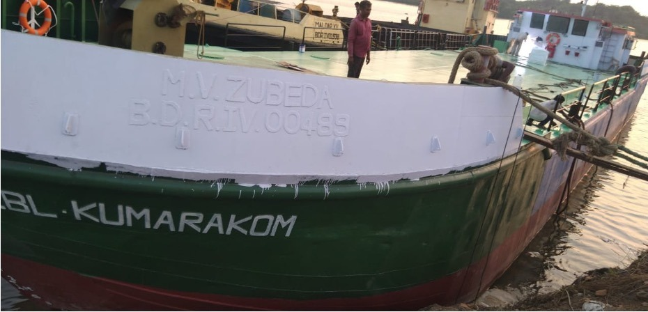
M V CBL Kumarakom Afloat
Following successful launch, the RINA classed phosphoric acid chemical carrier M V CBL Kumarakom (formerly M V Zubeda) is shown afloat in the canal at Belapur, undergoing final marine outfitting, engine alignment, and regulatory inspections.
| Parameter | Project Specification |
|---|---|
| Vessel Name | M V CBL Kumarakom (formerly M V Zubeda) |
| Vessel Type | Phosphoric Acid Chemical Carrier |
| Classification | RINA Class Certified |
| Current Phase | Afloat & Outfitting |
| Operational Yard | Maldar Shipyard (Reti Bunder, Belapur) |
| Status | Afloat (Undergoing final commissioning) |
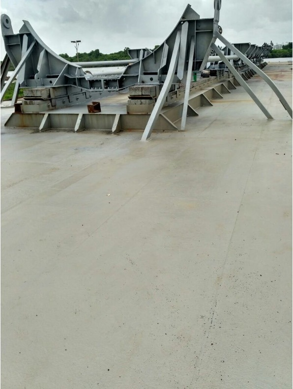
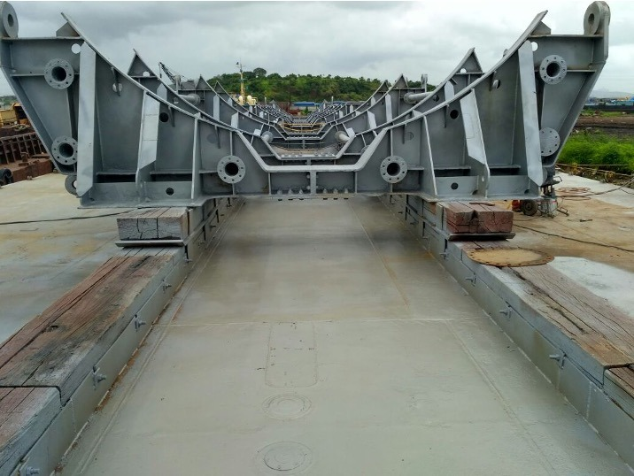
Cradle of Submarine Launching Pontoon
Extensive engineering works completed on the cradle of a submarine launching pontoon drydocked at Maldar Shipyard. The project involved 100 metric tons of steel renewal, comprehensive grit blasting, and marine paint application, all conducted under strict IRS Class supervision.
| Parameter | Project Specification |
|---|---|
| Vessel / Structure | Submarine Launching Pontoon Cradle |
| Works Executed | Complete grit blasting, painting & structural steel renewal |
| Steel Renewed | 100 Metric Tons (MT) |
| Classification Authority | Indian Register of Shipping (IRS Class) |
| Operational Yard | Maldar Shipyard (Reti Bunder, Belapur) |
| Status | Completed |
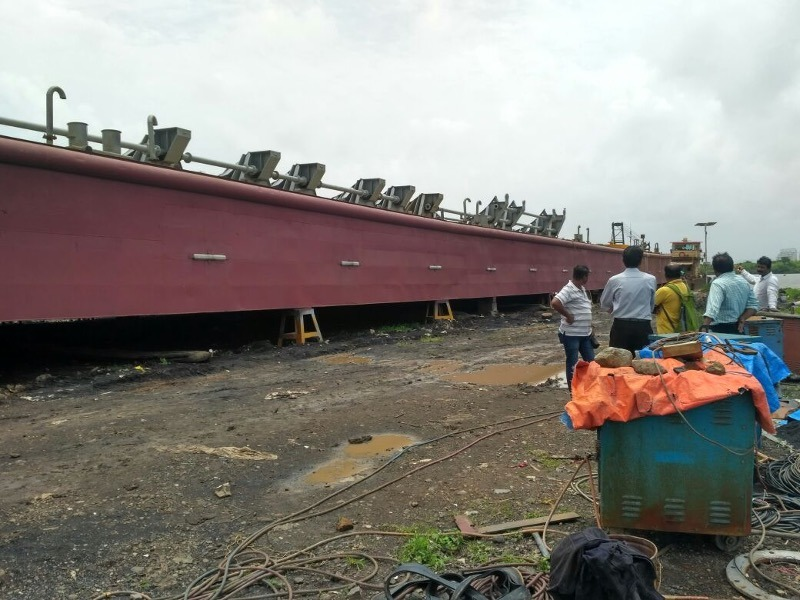
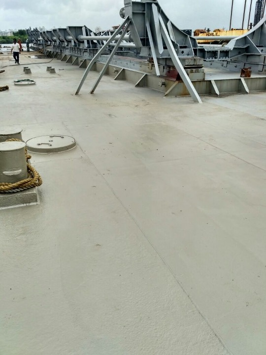
75 M Submarine Launching Pontoon
Maintenance, repair, and drydocking operations conducted on the 75-meter long submarine launching pontoon of the Indian Navy. Project features structural surveys, hull refurbishment, and IRS class compliance checks carried out at Maldar Shipyard.
| Parameter | Project Specification |
|---|---|
| Structure Name | 75 M Submarine Launching Pontoon |
| Owner / Operator | Indian Navy |
| Length Overall (LOA) | 75 Meters |
| Classification | Indian Register of Shipping (IRS Class) |
| Operational Yard | Maldar Shipyard (Reti Bunder, Belapur) |
| Status | Completed |
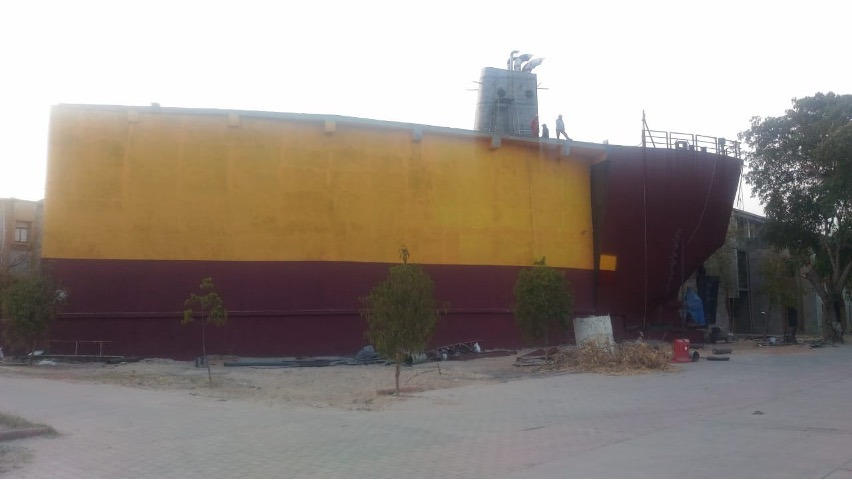
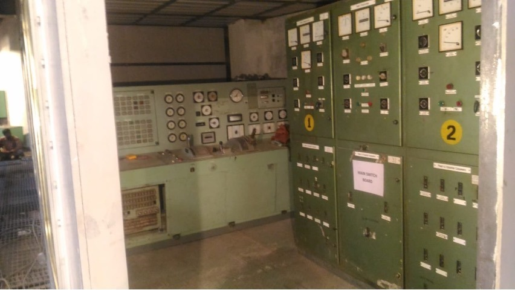
Ship in Campus for Ganpat University
Complete design, engineering, erection, and commissioning of a land-based ship superstructure 'Ship in Campus' training facility at Ganpat University in Mehsana, Gujarat. The installation acts as a high-fidelity replica of a real merchant navy vessel for student training and certification.
| Parameter | Project Specification |
|---|---|
| Facility Name | Ship in Campus (Ganpat University) |
| Location | Mehsana, Gujarat, India |
| Purpose | Maritime Training & Education (Merchant Navy Simulator) |
| Scope of Works | Hull structure erection, outfitting, machinery setup & final paint outlays |
| Status | Completed (Successfully Commissioned) |